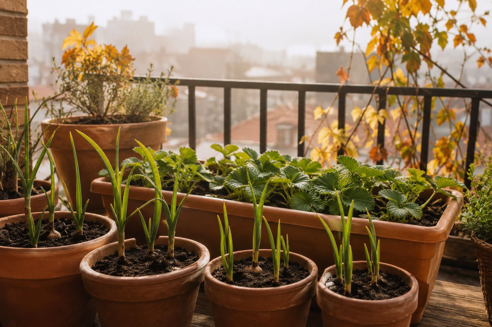

Si septiembre fue un buen mes para sembrar, octubre lo es todavía más para una lista larga de plantas: el ajo, los guisantes, la fresa y el fresón encuentran aquí su momento perfecto, y las hortalizas de hoja siguen a pleno rendimiento. Es también el último mes cómodo antes de que el frío empiece a frenar la germinación en las zonas más frías.
Por qué octubre es tan buen mes
Las temperaturas de octubre son suaves en casi toda España: ni el calor de julio-agosto que obligaba a sembrar a la sombra, ni el frío fuerte de diciembre que ralentiza todo. Es, además, el mes en que arrancan de verdad varios cultivos de ciclo largo (ajo, habas) que necesitan meses de frío suave para desarrollarse bien antes de la primavera.
Qué sembrar en octubre en tu huerto urbano
🥬 Hortalizas de hoja (sigue siendo su mejor época)
- Lechuga: válida en las 6 zonas climáticas de España este mes, sin excepción.
- Espinaca: gran mes para ella en atlántica, continental fría, continental cálida, mediterránea y semiárida.
- Acelga: bien en atlántica, continental cálida, mediterránea, semiárida y subtropical.
- Rúcula: buena cobertura en atlántica, continental cálida, mediterránea y semiárida.
🥕 Raíces
- Rábano: válido en las 6 zonas, rápido y agradecido como siempre.
- Zanahoria: buen mes en zona mediterránea, semiárida y subtropical.
🧄 Ciclo largo: el momento de plantarlos
- Ajo: octubre es de sus mejores meses, válido en atlántica, continental fría, continental cálida, mediterránea y semiárida. Necesita el frío del invierno para formar bien el bulbo.
- Guisante: cobertura total en las 6 zonas.
- Haba: bien en atlántica, continental cálida, mediterránea y semiárida.
- Cebolla: buen mes en continental cálida, mediterránea, semiárida y subtropical.
🍓 Fresas: su mes por excelencia
- Fresa: cobertura total en las 6 zonas climáticas este mes.
- Fresón: igual, válido en las 6 zonas — octubre es, con diferencia, el mejor mes del año para plantar fresas y fresones.
🌿 Aromáticas y de hoja para condimentar
- Perejil: cobertura total en las 6 zonas.
- Cilantro: igual, válido en las 6 zonas climáticas.
- Cebollino: también cobertura completa, perenne y agradecido.
🧄 No te olvides del ajo: es de las plantas más olvidadas en huerto urbano, pero apenas ocupa espacio, casi no necesita cuidados, y en 7-8 meses tienes tu propia cosecha. Octubre es su mes clave, no lo dejes para más adelante.
Un aviso antes de que llegue el frío de verdad
Octubre todavía es cómodo, pero en las zonas continental fría y atlántica ya empiezan a notarse las primeras noches frías. Si vives en una de esas zonas, siembra pronto en el mes (primera o segunda semana) para dar tiempo a que la planta se asiente antes de que el frío apriete más en noviembre.
¿No sabes qué se da bien en tu zona?
Lo de arriba son datos generales por zona climática, pero cada municipio tiene matices según su altitud y latitud exacta. Estas dos herramientas gratuitas te dicen exactamente qué sembrar según tu municipio:
Calendario de siembra
Pon tu pueblo y descubre qué plantar cada mes según tu altitud y clima real.
Ver el calendario →Planificador de huerto
Dinos tu espacio y qué quieres cultivar y te montamos un plan a medida.
Planificar mi huerto →← Volver a Consejos | Herramientas relacionadas: Calendario de siembra · Calculadora de riego · Qué plantar en septiembre